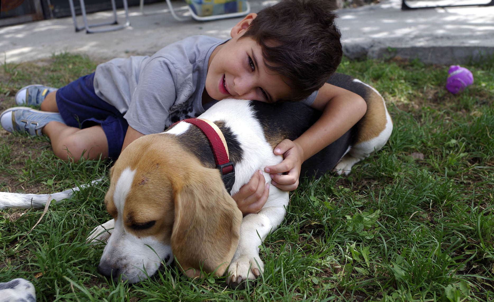
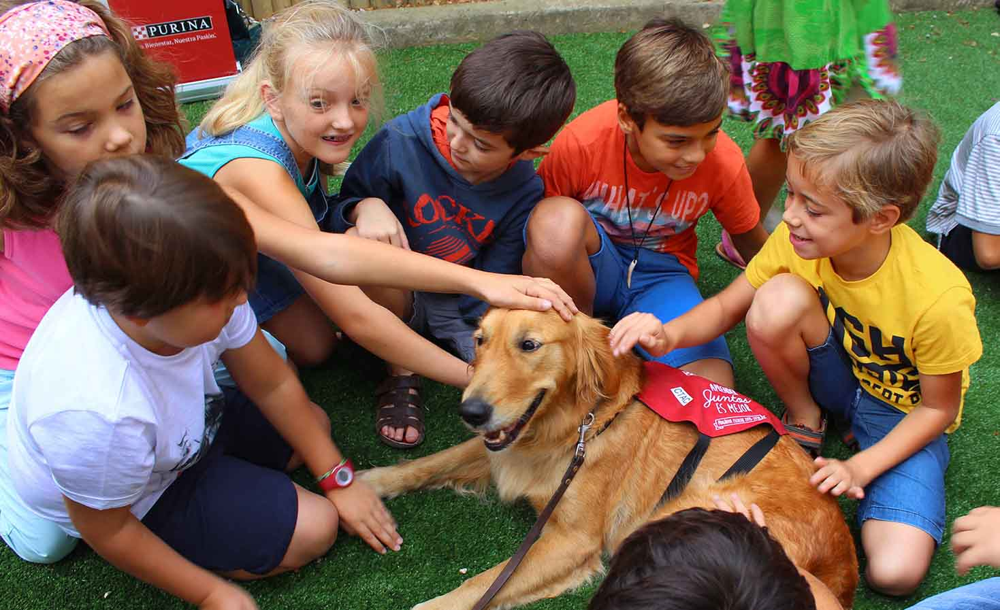
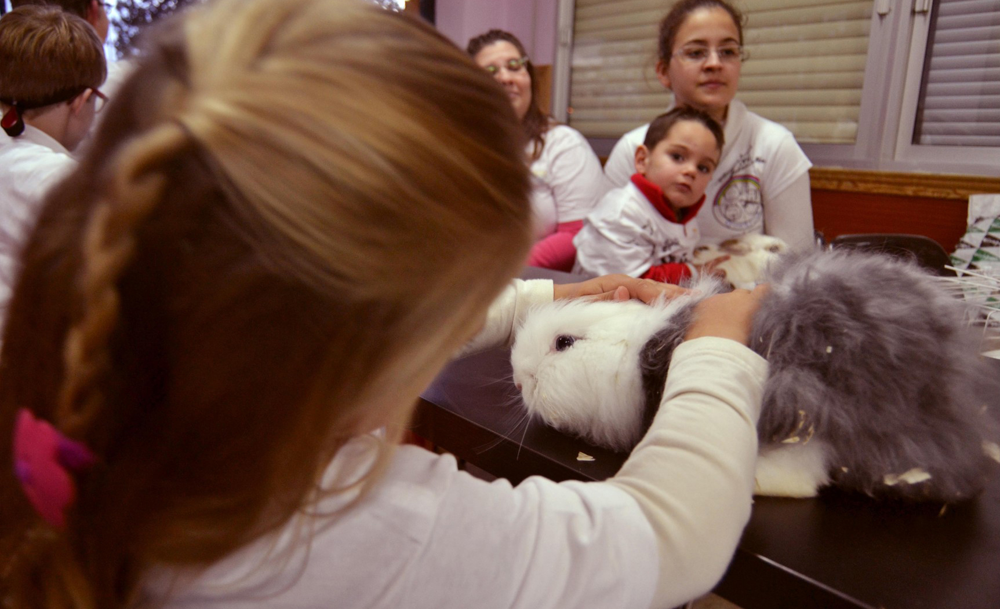

Aprende con pasión, educando mente y corazón
Fátima
Tamara
Paula
Itzíar
Nuestro equipo
Senda de Ensueño es un Centro de Atención Temprana, para niñas/os entre tres y seis años, caracterizado por su trabajo y su especialización. Desde nuestras estancias tenemos el objetivo de dar respuestas lo antes posible a las necesidades transitorias o permanentes de niñas/os que presentan trastornos en su desarrollo o tengan riesgos de padecerlos.
En nuestro centro nos centraremos en niñas y niños con Necesidades Educativas Especiales, tales como el Autismo, Asperger, Síndrome Down, Hiperactividad, Retraso psicomotor y niñas/os con problemas auditivos y cognitivos, al igual que trabajaremos con las familias y todo el entorno de la niña/o. Para ello contamos con un servicio complementario basado en excursiones y reuniones con los familiares, para desarrollar la interacción del alumnado con otros grupos de personas.
Dentro del equipo interdisciplinar a cargo de la dirección pedagógica, nos encontramos con profesionales graduados, tales como:
- 4 T.E.I (Educadoras)
- 1 Maestra.
- 1 Psicopedagoga.
- 1 Logopeda.
- 1 Pediatra.
- 1 Fisioterapeuta.
Animales
En nuestro centro realizamos terapias alternativas con animales que actúan como coterapeutas, tales como el perro, el conejo y el caballo, para poder desarrollar diferentes capacidades (la psicomotricidad infantil, la comunicación, la interacción social y la autonomía) de niñas/os con necesidades específicas y terapias mediante actividades físicas en contacto con la naturaleza; teniendo siempre en cuenta su particular metodología para potenciar los valores morales, sociales y solidarios.


Actividades
Nuestras actividades de usos multiples se realizaran tanto en las clases de nuestro centro así como en nuetras aulas de psicomotricidad. Y en las instalaciones del hipódromo acondicionadas para nuestras actividades.
Aulas
En Senda de Ensueño disponemos de cinco aulas completamente equipadas con cinco cuartos de baños, todos ellos adaptados a las necesidades de nuestros almunos.
Cocina
Contamos con una amplia cocina-comedor donde nuestros alumnos puedan disfrutar con sus familiares, compañeros/as y porfesoras de un bonito día.
Objetivos
- Reducir los efectos de una deficiencia o déficit sobre el conjunto global del desarrollo del niño.
- Ayudar a los niños a alcanzar su óptimo grado de madurez y desarrollo en todas las áreas, en la medida de lo posible.
- Introducir los mecanismos necesarios de compensación, de eliminación de barreras y adaptación a necesidades específicas.
- Evitar o reducir la aparición de efectos o déficits secundarios o asociados producidos por un trastorno o situación de alto riesgo.
- Atender y cubrir las necesidades y demandas de la familia y el entorno en el que vive el niño.
- Considerar al niño como sujeto activo de la intervención
- Favorecer al máximo el uso del potencial que poseen a nivel cognitivo, motórico, verbal, etc
- Proporcionarles habilidades básicas que son imprescindibles para futuros aprendizajes.
- Fomentar una adecuada interacción comunicativa entre el niño y sus padres.
El principal objetivo de nuestro centro es conseguir ofrecer los mejores servicios a nuestro alcance para todos los niños, basado todo ello en la mejora continua para optimizar la calidad de vida, teniendo en cuenta las características y problemas de cada niña/o con necesidades educativas especiales y de sus familiares.
Metodología
En nuestro centro trabajaremos con niños con necesidades especiales, tales como el Autismo, Asperger, Síndrome Down, Hiperactividad, Retraso psicomotor y niñas/os con problemas auditivos y cognitivos, sin olvidarnos de sus familias y su entorno. Se realizarán actividades de diferentes características para trabajar el mayor número de áreas posibles en el desarrollo del niño. Todas las actividades se realizarán en el interior del centro, exceptuando el domingo que se trasladará a niños y padres que lo deseen y acepten esa oferta extraordinaria que se ofrece, a un centro de equitación para realizar sesiones de equinoterapia. A lo largo de la semana se trabajará también con métodos partiendo de la naturaleza, teniendo que ocuparse del huerto y las diferentes plantas que habrá plantadas en el patio. Por lo tanto se podría decir que nuestra metodología de terapias es de carácter natural.
Evaluación
Las actividades en el interior de las aulas tendrán un seguimiento constante para ir percibiendo la mejoría. Las actividades relacionadas con la naturaleza y las excursiones tendrás su evaluación al final de cada mes, donde se hará una comparación con el mes anterior para ir notando la evolución del niño. Este seguimiento y evaluación será recogido siempre en las fichas de cada niño para que quede constancia.